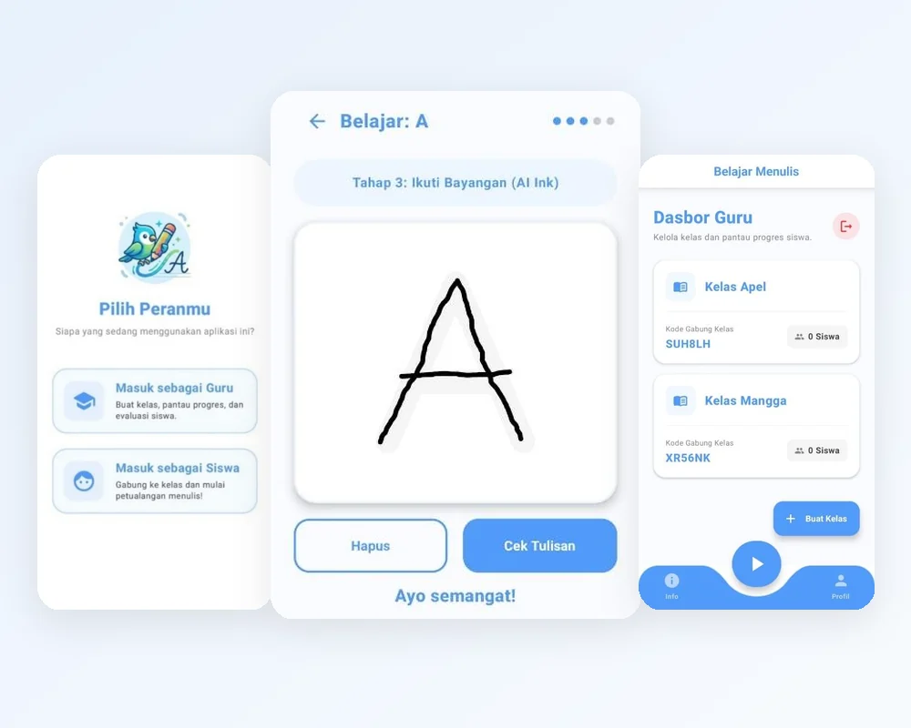

ASKARA
A tiered handwriting app that bridges on-screen tracing and real paper writing, with a teacher dashboard.

Overview
ASKARA is a tiered handwriting-learning app that uses machine learning to bridge digital and physical writing evaluation, with an integrated dashboard for teachers. It turns a phone from a passive screen into an interactive way to build fine motor skills.
Children's handwriting is getting worse as passive gadget use replaces the physical practice that builds fine motor control. Existing writing apps mostly keep children inside the screen, so they get good in the app but stay stiff on paper. ASKARA targets early learners moving into elementary school, and has the child prove the skill on real paper before moving on.
Learning is organized into 9 chapters, from pre-writing line patterns through vowels, consonants, numbers, syllables, simple words, and short sentences. Each letter has four digital stages (guided path, dotted path, shadow-guided canvas, blank canvas), followed by a physical exam: the child writes on paper, photographs it, and the app reads it back with text recognition. Three failed attempts in a row are flagged to the teacher. Checks run on the device with Google ML Kit (Digital Ink Recognition for tracing, Text Recognition for paper), and only the final score syncs in real time to the teacher dashboard through Firebase, so children's photos never leave the device.
In a pilot at SDN 16 in Banda Aceh with 32 Grade 2 students (16 July 2026), every child completed the letter level in about three minutes per child on average, and most could operate the app on their own. A few machine misreads showed up, but they did not block the evaluation flow.
Highlights
A look at ASKARA: tracing practice, the paper exam, and the class dashboards.
Stage 1: follow the guided line
Stage 3: shadow-guided canvas (AI Ink)
Stage 5: writing exam on paper
Choose your role
Teacher dashboard
Create a virtual class
Student dashboard
Chapter and letter selection